Model diagnostics: distributions, uncertainty and dependence
Source:vignettes/articles/model-checking.Rmd
model-checking.RmdChoose the model feature you want to check
A model can estimate a plausible mean curve while missing other patterns in the data. Counts can vary more than their fitted distribution allows. Residuals from successive measurements can remain correlated. Differences between groups can show up as extra variation around the mean curve. {gratia} provides residual diagnostics and posterior predictive checks to investigate these patterns in GAMs, linear models and mixed models.
We check the response distribution, variation between groups and
dependence between observations made in sequence. Checking different response
distributions extends the examples to distributional parameters,
censoring and weights. The articles on mgcv::gfam(), {glmmTMB} and {sdmTMB} illustrate diagnostics for those
model classes.
These examples require gratia 0.12.0 or later, R >= 4.4.0 and {mgcv} >= 1.9-4. We load mgcv and gratia for fitting and diagnostics, and {dplyr} and {ggplot2} for working with the results. The growth example also needs the optional {nlme}, {lme4} and {gamm4} packages (gamm4 >= 0.2-7). The plot examples use 50 replicated datasets to keep them quick to run. Use more draws and check that the plots are stable before interpreting small departures in the tails.
There are three distinct ways to generate a comparison:
| Question | Calculation | What varies between simulated datasets? |
|---|---|---|
| Is the variation around the fitted values typical for this model? | Conditional response simulation or QQ reference | Responses vary around the same fitted effects. |
| Can the model reproduce these features of the data once we allow for uncertainty in the fitted effects? | Conditional posterior predictive check | Each dataset uses a new draw of the fitted effects as well as new responses. |
| How much variation should we expect among new groups or spatial fields? | Marginal response simulation or marginal posterior predictive check | New group or field effects are drawn from their fitted distribution. A posterior predictive check can also draw uncertain parameters, depending on the model. |
A smooth plot’s interval concerns an estimated effect. A QQ reference band concerns ordered residuals from replicated responses. A posterior predictive plot concerns replicated response distributions. QQ reference bands condition on the fitted model, without refitting it for each replicate. Use departures from these bands to locate discrepancies to investigate, rather than as a formal rejection rule.
Plot subtitles identify the method. Short captions identify
conditioning, field choices, joint simulation bands or omitted bands.
Routine pointwise bands are unlabelled. Posterior predictive captions
identify conditioning only. Use caption = "" to omit a
caption or supply your own text. Scalable QQ and worm plots use the same
labels as their ordinary counterparts.
Check the response distribution and the mean of count data
Consider daily insect counts at independently sampled sites. We simulate 12,000 sites with temperature and wind as covariates. The mean count peaks at intermediate temperatures and falls with wind. Conditional on these covariates, each count follows a Poisson distribution.
set.seed(301)
insects <- data.frame(temperature = runif(12000, 5, 30),
wind = runif(12000, 0, 10))
insects$count <- rpois(nrow(insects),
exp(2.5 - ((insects$temperature - 19) / 8)^2 - 0.1 * insects$wind))We fit a smooth temperature effect and a linear wind effect to recover these relationships:
count_fit <- bam(count ~ s(temperature, bs = "cr", k = 12) + wind,
data = insects, family = poisson(), method = "fREML", discrete = TRUE)The simulation uses Poisson counts, whose variance equals their mean at fixed temperature and wind. We use quantile residuals to check the fitted response distribution and look for remaining patterns in the mean or spread. In real data, counts can vary more than a Poisson model predicts, in which case a negative binomial model may fit better.
appraise(count_fit, type = "quantile", seed = 302)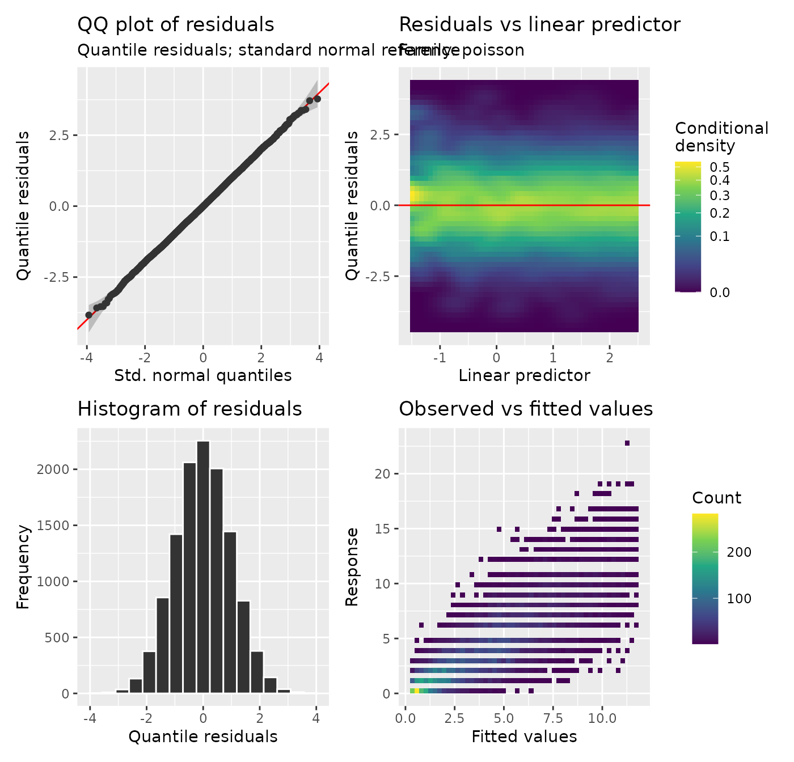
With 10,000 or more observations used in the fit,
appraise() switches to scalable plots that summarise all
observations in bins. This makes the distribution easier to see when
many points would overlap. A roughly straight QQ plot and similar
residual spread across fitted values are consistent with the Poisson
model. The observed-versus-fitted panel shows the amount of variation
around the fitted means.
Calculate PIT and quantile residuals
A probability integral transform (PIT) residual describes an observation’s position in its fitted response distribution. For a count y with fitted cumulative distribution function (CDF) F, it is a random draw between F(y-1) and F(y). Quantile residuals apply the standard-normal quantile function to that probability. This randomisation avoids artificial steps caused by integer responses. For continuous outcomes the probability is simply F(y). We calculate both residual types for the same observations and seed to show how the probability becomes a normal score:
u <- quantile_residuals(count_fit, type = "pit", seed = 302)
r <- quantile_residuals(count_fit, type = "quantile", seed = 302)
head(data.frame(observed = insects$count, fitted = fitted(count_fit),
probability = u, normal_score = r))
#> observed fitted probability normal_score
#> 1 6 4.8295420 0.72883035 0.6092793
#> 2 3 0.7658596 0.98856666 2.2756548
#> 3 1 0.5058428 0.80581932 0.8625928
#> 4 1 4.1404109 0.03528062 -1.8082909
#> 5 5 4.3879965 0.61980026 0.3049562
#> 6 5 4.3668547 0.64330424 0.3673050These probabilities should be roughly uniform between zero and one if the model describes the response distribution well. Their quantile residuals should then be approximately standard normal. Poisson deviance residuals have a different distribution, so we simulate reference quantiles from the fitted model for their QQ plot.
qq_plot(count_fit, type = "deviance", method = "simulate",
n_simulate = 50, seed = 303)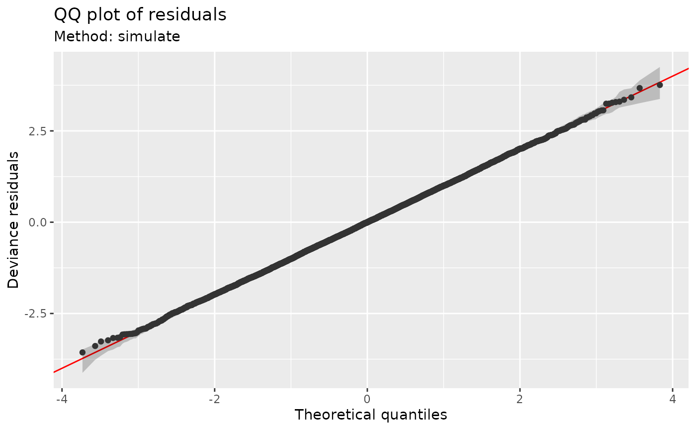
Here the reference comes from responses simulated at the fitting
covariates. Each observation’s fitted mean enters its simulated
response. method = "uniform" simulates responses by
applying the fitted inverse CDF to randomly shuffled uniform quantiles,
then averages the ordered residuals across replicates.
method = NULL chooses this method for most independent
GAMs. For Tweedie models it uses simulation from the fitted family
because evaluating their inverse CDF is costly. You can choose a method
explicitly where supported. A worm plot subtracts reference quantiles
from the ordered residuals. This makes small departures easier to see as
patterns around zero. Here we use quantile residuals and summarise the
QQ curve in 80 bins:
scalable_worm_plot(count_fit, type = "quantile", qq_bins = 80, seed = 302)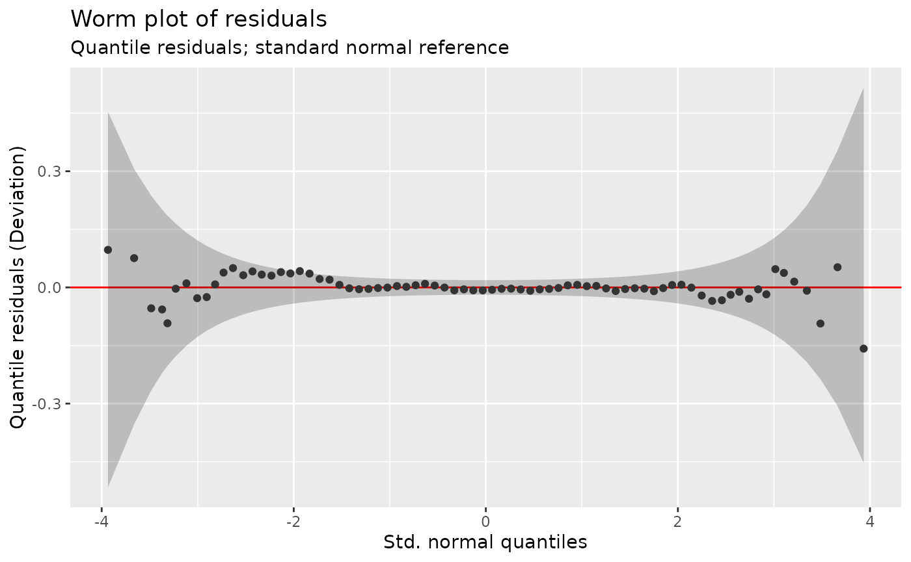
Look for what the QQ plot could miss
A response distribution can look plausible when observations are pooled while systematic lack of fit remains at some covariate values. Remove the curved relationship to temperature to see this:
linear_fit <- glm(count ~ temperature + wind, data = insects,
family = poisson())
scalable_residuals_covariate_plot(linear_fit,
covariates = c("temperature", "wind"), type = "pearson")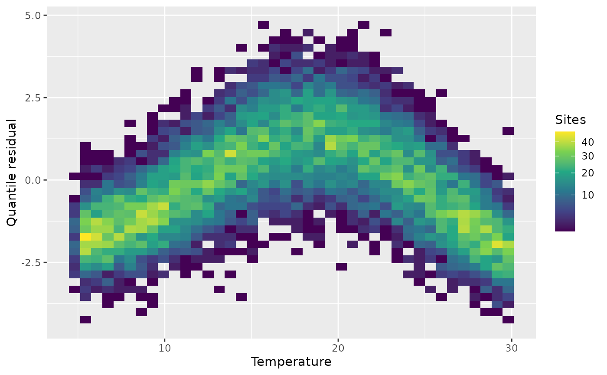
The curved residual mean against temperature shows where the linear
effect misses the response shape. Response residuals subtract the fitted
mean from the count. Pearson residuals then divide that difference by
its fitted standard deviation. For a broader distributional check, use
type = "quantile" or type = "pit" to examine
location, spread and tails against each covariate. For non-Gaussian
deviance residuals, a mean away from zero can occur even when the model
fits well.
The ordinary and scalable covariate plots default to
smooth = NULL, which fits the residual mean trend only for
groups with at most 20,000 eligible observations. Use
smooth = TRUE to fit trends for larger groups, or
smooth = FALSE to omit them. The threshold is applied
separately within each response, family component and by
group.
The ordinary version shows individual residuals. It is useful for smaller teaching examples; both versions use all eligible observations:
small_insects <- insects[seq_len(500), ]
small_fit <- gam(count ~ temperature + wind, data = small_insects,
family = poisson(), method = "REML")
residuals_covariate_plot(small_fit, covariates = "temperature", type = "pearson")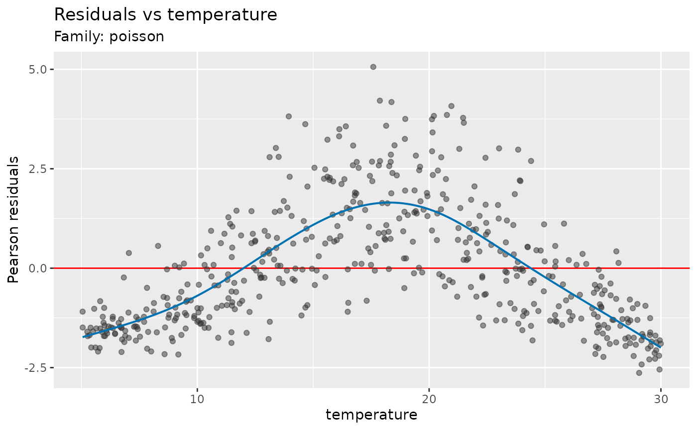
By default each distinct model covariate gets one panel. To select
covariates through a smooth, supply its exact label from
smooths(count_fit):
smooths(count_fit)
#> [1] "s(temperature)"
scalable_residuals_covariate_plot(count_fit, terms = "s(temperature)",
type = "quantile", seed = 302)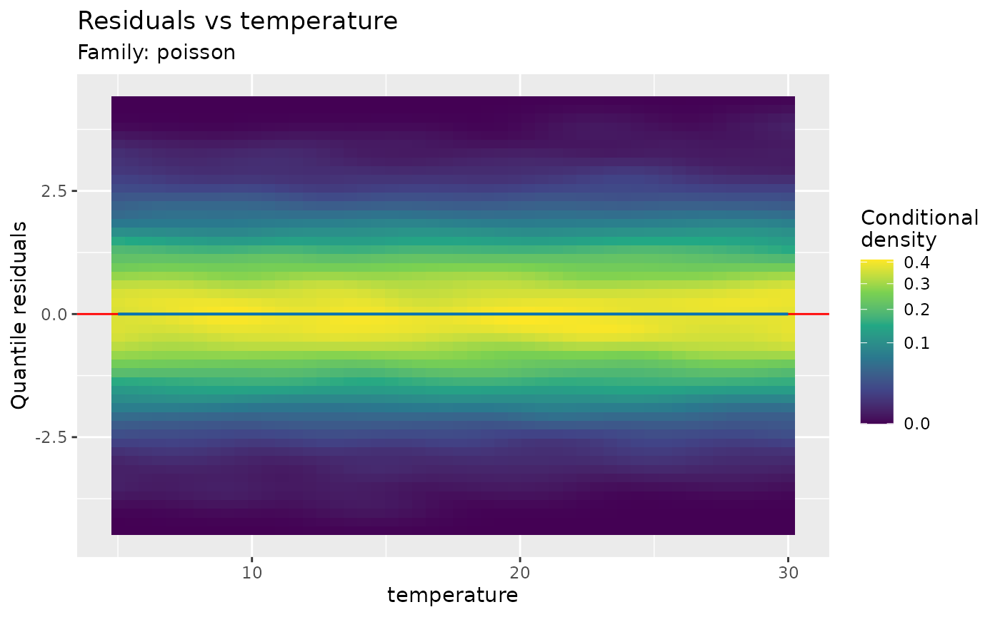
For tensor products use labels such as
"te(temperature,wind)", without adding spaces.
terms accepts smooth labels only, while
covariates can also select covariates fitted as linear
terms or covariates absent from the model. Supply the original fitting
data for omitted covariates or when raw transformed
covariates are unavailable. For a categorical covariate, the functions
show residual boxplots and group means; by = "group"
separates patterns into group facets.
Separate panels can miss a remaining interaction. Here the mean contains a product of two independent, centred covariates, plus independent Gaussian errors with standard deviation one. Averaging over either covariate hides the interaction in the other covariate’s residual mean:
set.seed(306)
interaction_data <- data.frame(x = runif(4000, -1, 1), z = runif(4000, -1, 1))
interaction_data$y <- 4 * interaction_data$x * interaction_data$z + rnorm(4000)We deliberately omit the interaction from this model, then compare separate residual plots with a map of the residuals over both covariates:
additive_fit <- gam(y ~ s(x) + s(z), data = interaction_data, method = "REML")
scalable_residuals_covariate_plot(additive_fit, covariates = c("x", "z"),
pairs = list(c("x", "z")), bins = c(10, 10), type = "pearson")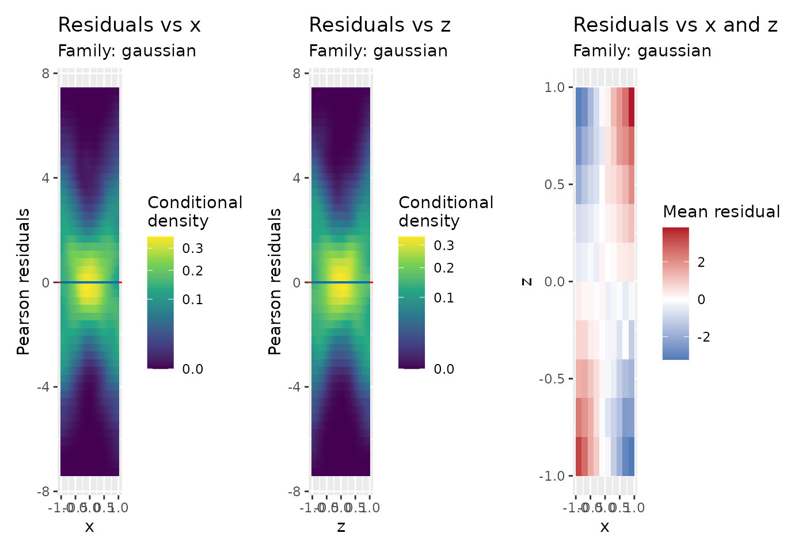
The map shows the mean residual within each occupied cell. Opposite
corners have residuals of the same sign, with the two diagonals
differing in sign. This is the pattern expected here when the model
omits the interaction. Cells with fewer than min_n
observations are blank. Use statistic = "sd" to inspect
changes in spread instead; this is particularly useful with quantile or
PIT residuals. Correlated covariates can share residual patterns, so
check a revised model before attributing the pattern to one particular
effect. If a smooth reaches its basis dimension limit, try increasing
k and check whether that reduces the residual pattern in
the refitted model.
Use density and count summaries for large datasets
Scalable plots summarise the observations so dense regions remain readable. The first two plots below compare smoothed densities with histogram bins; the other two show observed versus fitted counts and the residual distribution:
scalable_residuals_linpred_plot(count_fit, type = "quantile", seed = 302)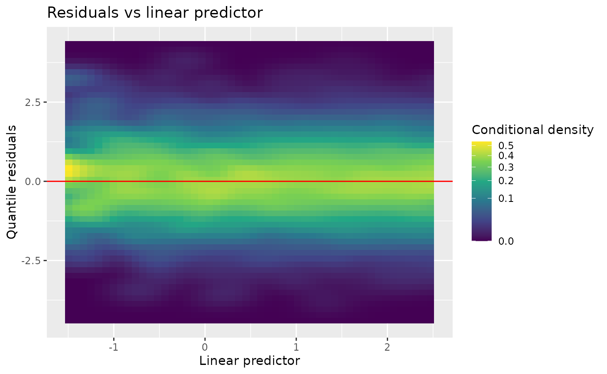
scalable_residuals_linpred_plot(count_fit, type = "quantile", seed = 302,
density_method = "histogram")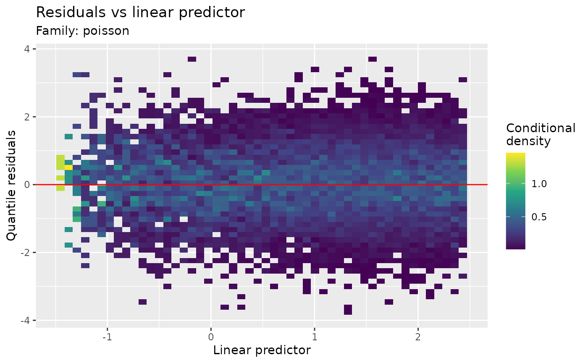
scalable_observed_fitted_plot(count_fit)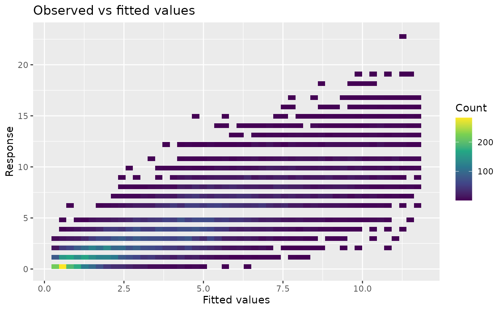
scalable_residuals_hist_plot(count_fit, type = "quantile", seed = 302)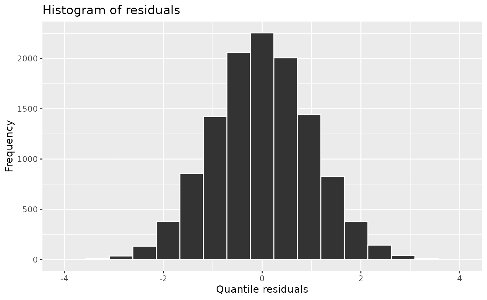
The default residual heatmap uses a kernel estimate of density at
each predictor value. Its square-root colour scale keeps low-density
regions visible. The histogram option uses unsmoothed bins;
bandwidth controls smoothing on both axes.
Observed-versus-fitted count heatmaps remain unsmoothed. The scalable
functions also include scalable_qq_plot(); ordinary plots
remain available with appraise(..., scalable = FALSE), and
scalable_threshold changes the automatic cutoff. Simulation
still generates a response for every observation, so using a compact
display does not reduce the number of observations checked.
We can also compare the observed count distribution with replicated datasets. This posterior predictive check includes coefficient uncertainty as well as response variation:
posterior_predictive_plot(count_fit, n = 50, seed = 304, scalable = TRUE)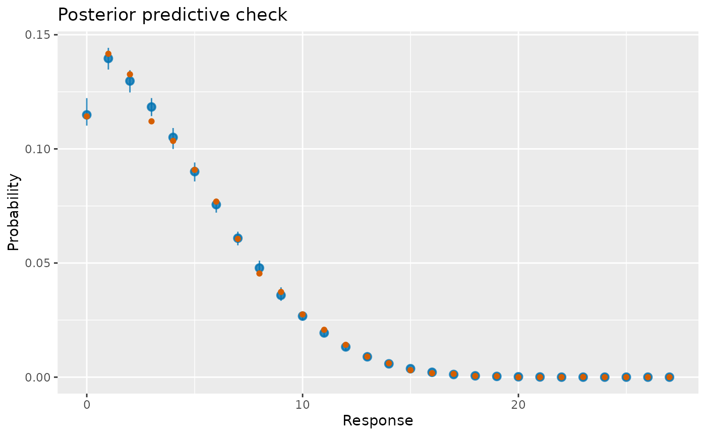
For each count, the plot compares its observed proportion with the
median and central 90% of its proportions in the replicated datasets.
These intervals describe variation across whole datasets. If there are
more than 512 distinct count values, the plot shows proportions in 512
labelled bins instead. appraise(ppcheck = TRUE, n_ppc = 50)
replaces the residual histogram with this comparison. Offsets supplied
as fitting arguments are retained in posterior response draws. Explicit
seeds preserve the caller’s random-number state; coefficient draws and
response draws use separate streams.
Repeated measurements: fixed effects, fitted groups and new groups
The Orthodont data contain dental measurements on 27 children at ages 8, 10, 12 and 14. Each child contributes several observations, so their values can share an individual growth trajectory. A Gaussian linear mixed model with sex-specific age slopes and correlated child intercepts and slopes is a useful starting point. With only four occasions per child, very detailed individual curves are not supported.
library("nlme")
library("lme4")
library("gamm4")
data("Orthodont", package = "nlme")
growth <- transform(Orthodont, age_c = age - 11)
growth_fit <- lme(distance ~ Sex * age_c, random = ~ age_c | Subject,
data = growth, method = "REML")
summary(growth_fit)$tTable
#> Value Std.Error DF t-value p-value
#> (Intercept) 24.9687500 0.48600071 79 51.375953 1.812713e-62
#> SexFemale -2.3210227 0.76141679 25 -3.048295 5.375053e-03
#> age_c 0.7843750 0.08599951 79 9.120691 5.654754e-14
#> SexFemale:age_c -0.3048295 0.13473534 79 -2.262432 2.641752e-02The age coefficient describes mean growth in the reference sex, and the interaction describes a difference in age slopes. The fitted random effects describe departures for these children. The positive fitted age slopes describe growth between ages 8 and 14. We now compare two questions: does the model describe measurement variation around these children’s fitted curves, and does it describe the variation expected across new children?
qq_plot(growth_fit, type = "quantile", conditioning = "conditional", seed = 305)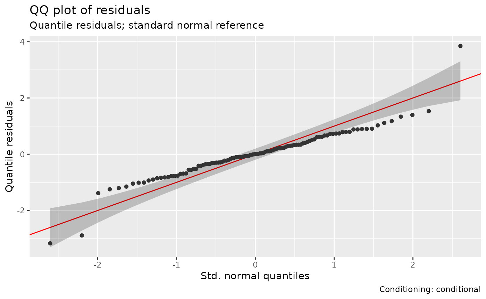
qq_plot(growth_fit, type = "quantile", conditioning = "marginal",
n_simulate = 50, seed = 305)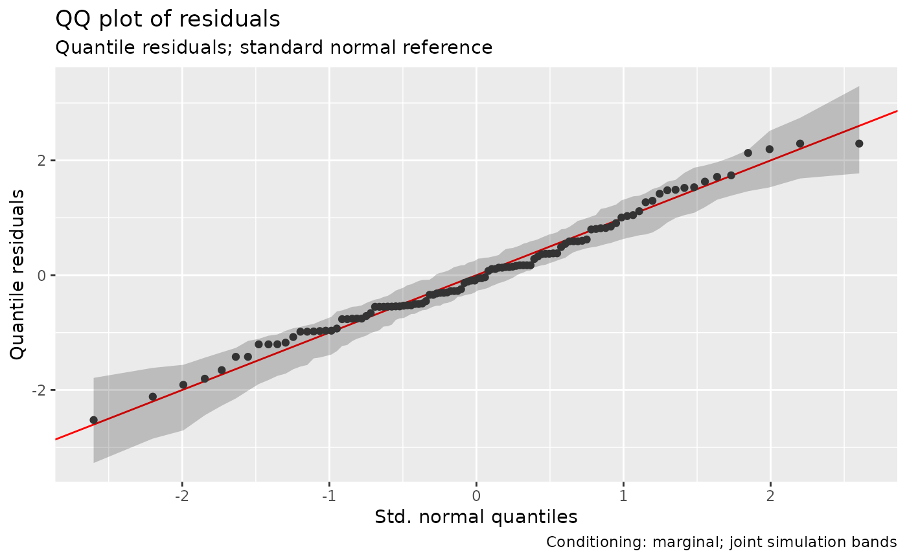
The conditional comparison holds each child’s fitted intercept and slope fixed and checks remaining measurement variation. The marginal comparison generates new child trajectories. All four simulated measurements for a child share a new intercept and slope drawn together from their fitted distribution. In this fit the conditional scores have a compressed centre and one large positive tail departure. The marginal plot averages over different child trajectories and is closer to its reference. Investigate the observation responsible for the largest conditional score alongside that child’s trajectory.
The marginal QQ plot simulates complete sets of measurements to account for the dependence among measurements from each child when it constructs its reference bands.
The QQ plot pools the ordered residuals. To check the shared child effects, also plot trajectories or residuals against age, grouped by child: systematic patterns within children can be hidden by pooling.
Each panel below shows one child’s quantile residuals against age centred at 11 years. Look for residuals that change systematically with age or remain mostly on one side of zero. We omit a smoother because each child has only four measurements.
residuals_covariate_plot(growth_fit, covariates = "age_c", by = "Subject",
type = "quantile", conditioning = "conditional", smooth = FALSE, seed = 305,
xlab = "Age relative to 11 years")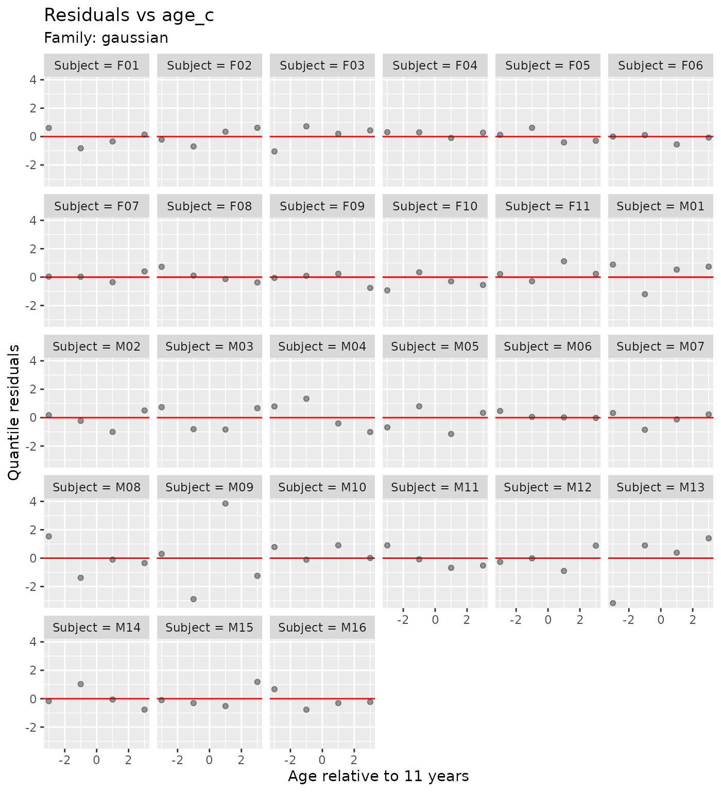
The following posterior predictive checks address the same conditional and marginal questions while also allowing uncertainty in the estimated effects:
posterior_predictive_plot(growth_fit, conditioning = "conditional", n = 50,
seed = 306)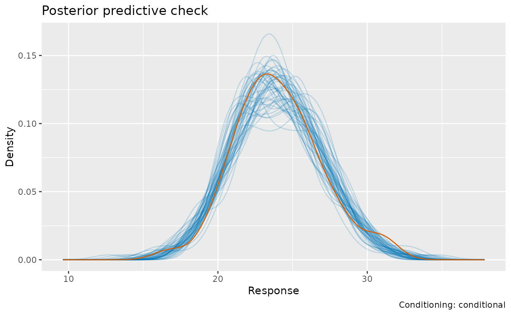
posterior_predictive_plot(growth_fit, conditioning = "marginal", n = 50,
seed = 306)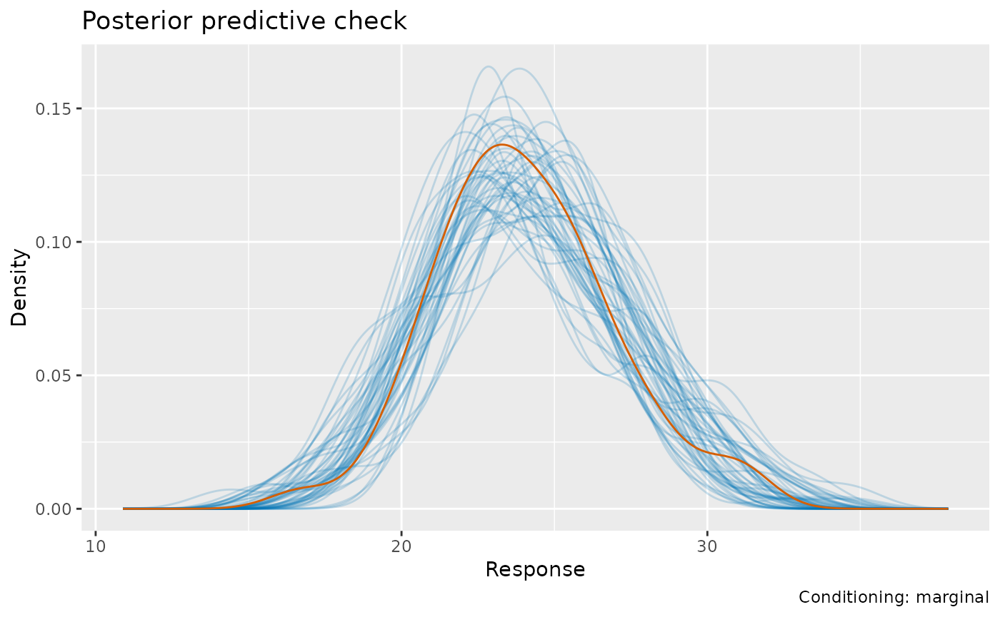
The conditional posterior predictive check draws the fitted child effects and fixed effects together, then simulates measurements around the sampled growth curves. The marginal check draws new child effects from their fitted population distribution each time it simulates measurements. Both nlme calculations hold the covariance parameters at their fitted values. The density overlays pool the measurements across ages and children. Use the trajectory plots to examine where that variation occurs.
Check models fitted with lme4 and gamm4
We first fit the same linear growth model with lmer()
and check its conditional quantile residuals. We then fit a shared
smooth age curve with gamm4(), retaining a separate
intercept for each child, and inspect its smooth and variance
components:
growth_lmer <- lmer(distance ~ Sex * age_c + (age_c | Subject),
data = growth, REML = TRUE)
appraise(growth_lmer, conditioning = "conditional", type = "quantile", seed = 305)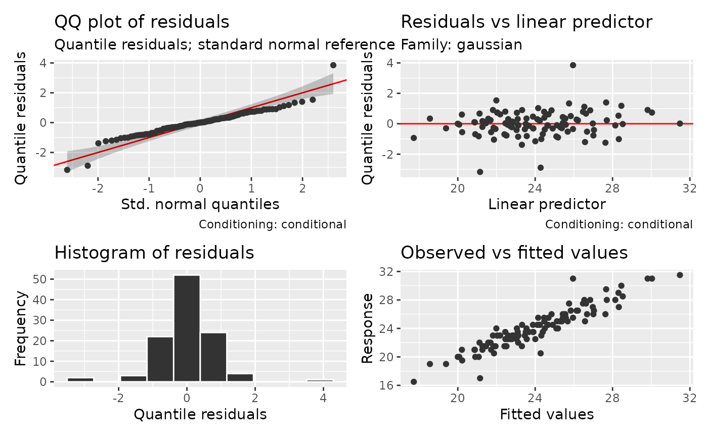
growth_smooth <- gamm4(distance ~ Sex + s(age, k = 4),
random = ~(1 | Subject), data = growth)
draw(growth_smooth)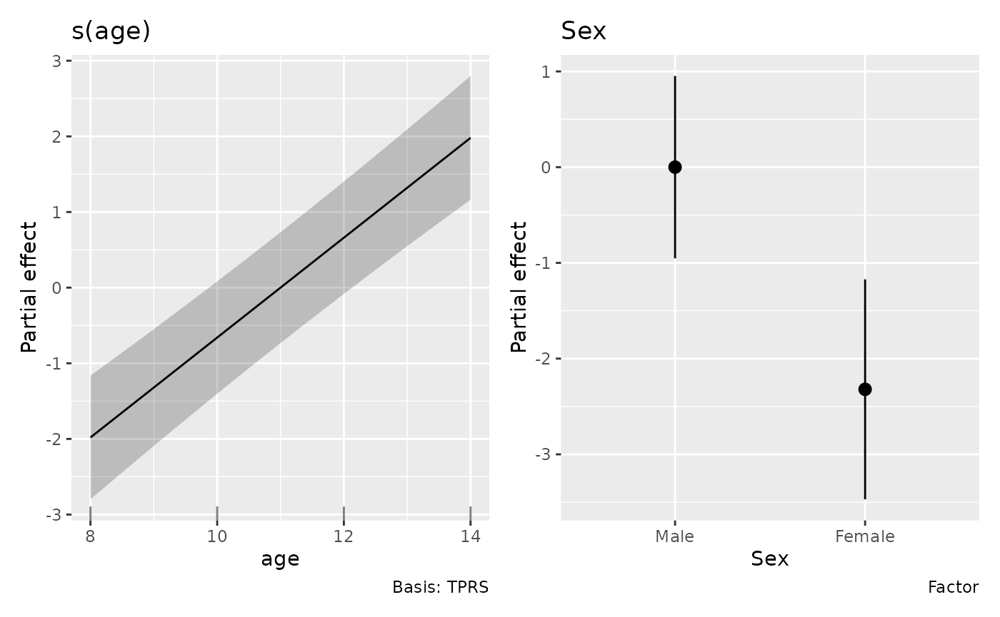
variance_comp(growth_smooth)
#> # A tibble: 3 × 5
#> .component .variance .std_dev .lower_ci .upper_ci
#> <chr> <dbl> <dbl> <dbl> <dbl>
#> 1 s(age) 0 0 0 0.386
#> 2 Subject:(Intercept) 3.27 1.81 1.28 2.40
#> 3 scale 2.05 1.43 1.23 1.67The direct lmer() fit answers the same linear-growth
question. The gamm4() fit instead asks whether a shared
population age curve is curved, with child intercepts accounting for
repeated observations. It can be passed directly to gratia.
draw(), predictions, derivatives and fitted-value draws
describe its population GAM component; group terms specified in
random are excluded from those calculations. Variance
components include both smooth penalties and native group effects, with
missing interval bounds where the fit provides none. Next we check the
complete mixed model and obtain predictions from the population GAM
component for girls aged 8 to 14:
appraise(growth_smooth, conditioning = "conditional", seed = 307)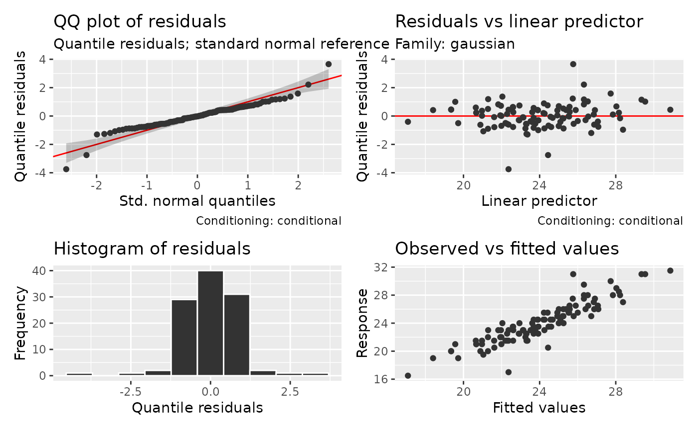
posterior_predictive_plot(growth_smooth, n = 50, seed = 307)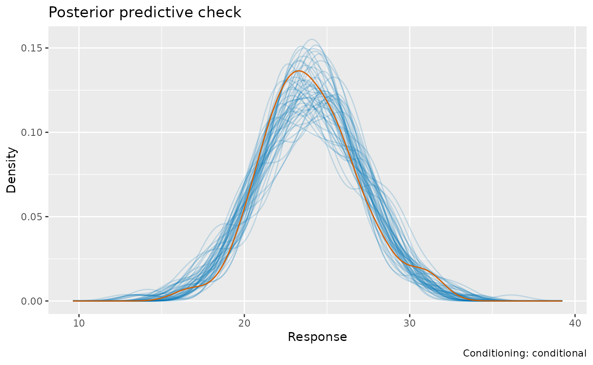
population_grid <- data.frame(age = seq(8, 14, length.out = 30),
Sex = factor("Female", levels = levels(growth$Sex)))
fitted_values(growth_smooth, data = population_grid) |> head()
#> # A tibble: 6 × 8
#> .row age Sex .parameter .fitted .se .lower_ci .upper_ci
#> <int> <dbl> <fct> <chr> <dbl> <dbl> <dbl> <dbl>
#> 1 1 8 Female mean 20.7 0.615 19.5 21.9
#> 2 2 8.21 Female mean 20.8 0.611 19.6 22.0
#> 3 3 8.41 Female mean 20.9 0.607 19.7 22.1
#> 4 4 8.62 Female mean 21.1 0.604 19.9 22.3
#> 5 5 8.83 Female mean 21.2 0.601 20.0 22.4
#> 6 6 9.03 Female mean 21.4 0.599 20.2 22.5Diagnostics and response simulations for gamm4() default
to the full conditional mixed model, including fitted child and smooth
effects. Posterior response draws default to uncertainty in those fitted
effects. Explicit conditioning = "gam_component" selects
the extracted GAM calculations, and is required for posterior response
draws at new data or supplied coefficient draws.
conditioning = "marginal" generates new mixed-model
effects; for gamm4() this includes the spline effects
represented as random effects, so it asks a different question from new
measurement errors around a fixed age curve. The existing
gamm() response simulator still defaults to its GAM
component; request full-model conditioning explicitly there. See gamm4_support
for covariance and sampling restrictions. Use fitting-package prediction
on the mer component for predictions conditional on a
particular child’s effects.
Check serial dependence in Gaussian and count models
The following simulation represents regularly spaced measurements
from four independent monitoring series with a slowly changing mean. The
Gaussian errors follow a first-order autoregressive (AR1) process, with
a correlation of 0.6 between successive errors in the same series. We
pass this known correlation as rho so bam()
uses it during fitting. We then inspect the QQ plot and look for
correlation in the adjusted residuals.
set.seed(308)
monitor <- expand.grid(time = seq_len(120), station = factor(seq_len(4)))
monitor$start <- monitor$time == 1
monitor$measurement <- 2 + sin(monitor$time / 25) +
unlist(lapply(seq_len(4), function(i)
as.numeric(arima.sim(list(ar = 0.6), n = 120, sd = 0.5))))
serial_fit <- bam(measurement ~ s(time, bs = "cr", k = 12), data = monitor,
rho = 0.6, AR.start = start, discrete = TRUE)
qq_plot(serial_fit, method = "simulate", n_simulate = 50, seed = 309)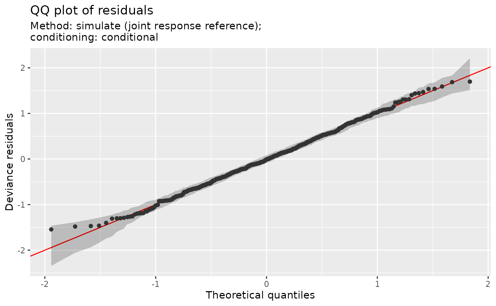
residual_correlation_plot(serial_fit, lag_max = 15)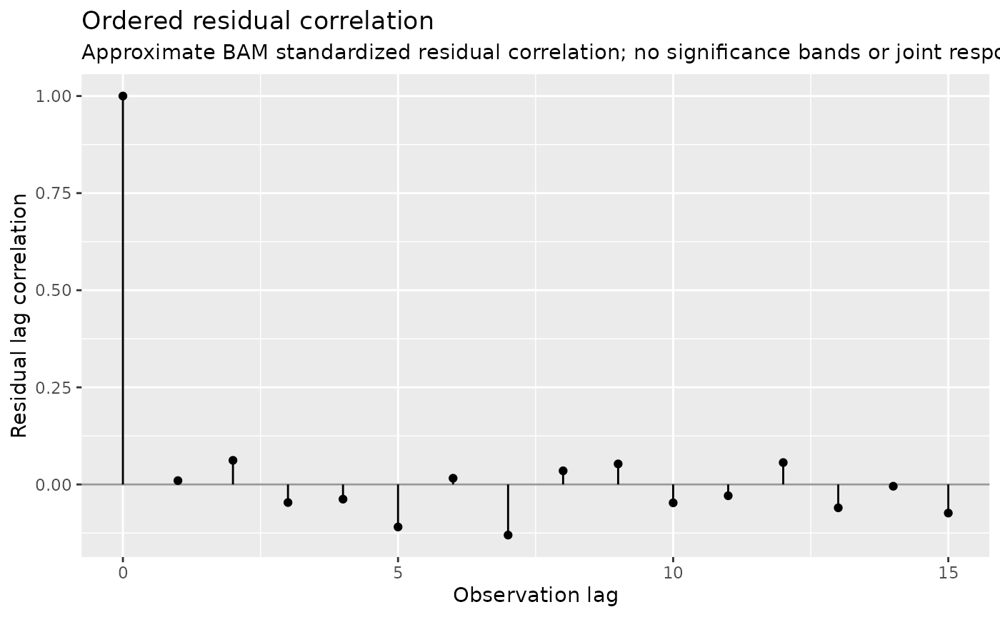
residual_correlation(serial_fit, lag_max = 3)
#> # A tibble: 4 × 3
#> lag correlation n_pairs
#> <int> <dbl> <int>
#> 1 0 1 480
#> 2 1 0.00981 476
#> 3 2 0.0620 472
#> 4 3 -0.0465 468For a Gaussian BAM with an identity link, the reference simulations
preserve the AR1 covariance and start an independent series at each
AR.start. The correlation plot uses residuals standardised
by the supplied AR1 correlation to look for remaining correlation. The
companion table reports the correlation and number of usable pairs at
each lag, with fewer pairs at longer lags. Lags count observation
positions. With irregular measurements, equal lags can therefore
represent different lengths of time.
For counts, bam() with discrete = TRUE
applies rho to its working residuals, the
quantities used during iterative fitting. This adjusts the fit for
correlation using a generalised estimating equations (GEE)
approximation. It leaves the joint distribution of the counts
unspecified. We illustrate this with Poisson counts whose log means
depend on the correlated Gaussian measurements simulated above.
We fit a Poisson BAM with the working correlation correction, then inspect its quantile residuals and the remaining correlation in its working residuals:
working_fit <- bam(count ~ s(time, bs = "cr", k = 12), data = monitor,
family = poisson(), discrete = TRUE, rho = 0.6, AR.start = start)
qq_plot(working_fit, type = "quantile", seed = 311)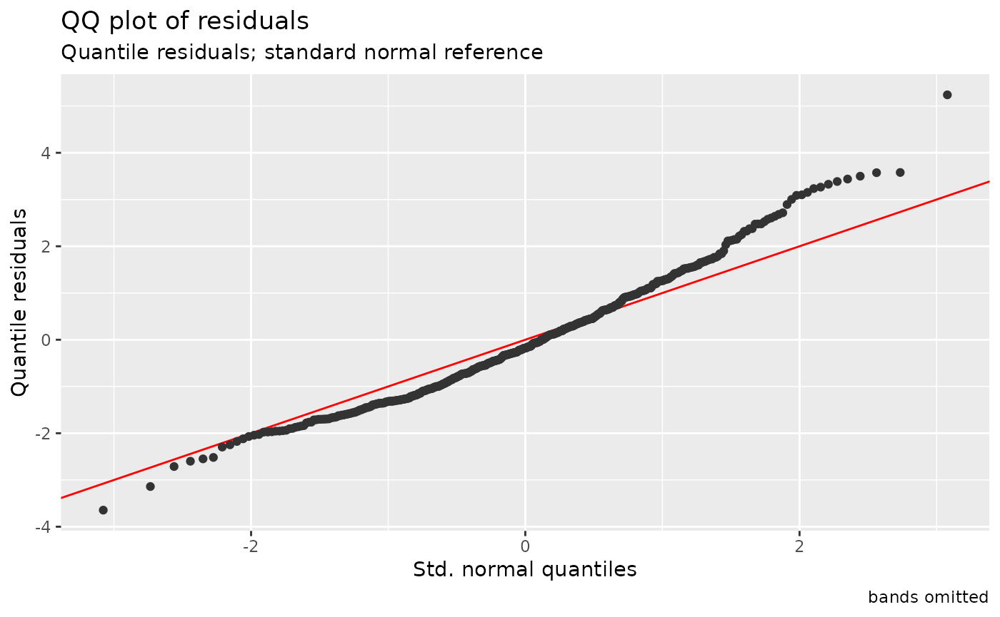
residual_correlation_plot(working_fit, type = "working.standardized", lag_max = 15)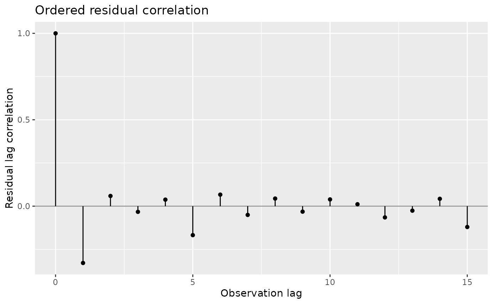
The fitted Poisson probabilities still locate each count in its own
response distribution. The QQ plot omits bands because the working
correlation does not supply a joint distribution for the counts. For
traditional residuals, the default QQ reference pools the individual
fitted residual distributions. The correlation plot examines working
residuals after adjusting for the fitted AR1 correlation; this is an
approximate check for remaining serial dependence.
type = "standardized" instead uses mgcv’s stored
std.rsd, which is not necessarily the weighted working
residual used during non-Gaussian fitting. Here the large negative
lag-one correlation after that adjustment suggests that the supplied
working correction is too strong. We supplied the latent Gaussian
correlation, whereas the correction acts on working residuals from the
count model. These correlations can differ. The upper-tail departure in
the QQ plot also reflects variation from the latent process that the
Poisson distribution omits. Use these two checks to examine the working
correction and the response distribution separately.
qq_plot(working_fit, method = "simulate"), joint
simulate() and posterior_predictive_plot() are
explicitly unsupported. The same restriction applies to nonidentity
Gaussian and extended-family working AR1 BAM fits, and to correlated
non-Gaussian PQL gamm() fits. Approximate PQL checks
without residual working correlation remain available. A non-Gaussian
mixed model that specifies how observations depend on one another, for
example through AR1 effects on the log mean in glmmTMB, can provide
joint predictive simulations. That choice needs to reflect how
dependence is thought to arise in the data.
Choose checks for the part of the model you want to examine
Use PIT or quantile checks for response distributions, predictor plots for mean and variance structure, and ordered or spatial displays for dependence. Conditional and marginal comparisons can disagree because they ask different questions. The sdmTMB article develops four choices for fitted fields, including one posterior field draw and integration over fitted-field uncertainty; these are separate from simulating new fields or drawing parameter uncertainty.
diagnostic_support
lists the precise supported families and conditioning modes. Unsupported
cases remain errors: quasi families do not specify a full response
distribution, censored posterior checks need an observation mechanism,
and a working correlation alone is insufficient for a joint simulator.
Models with independent responses use analytic uniform/normal score
references where available. Dependent responses use joint simulation for
bands where possible; otherwise the plot explains their omission.